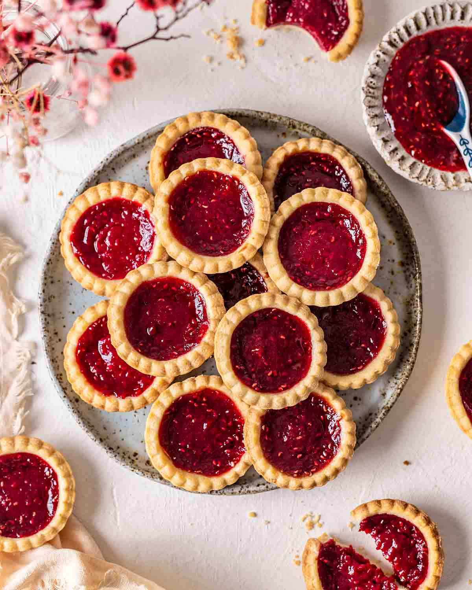

Enchanting Eclairs...

Ingredients:
- 1 cup of stardust-infused flour
- 4 dragon eggs (or regular eggs if unavailable)
- 1/2 cup of unicorn tears
- A pinch of fairy sugar
- A dash of mermaid sea salt
- 3 tablespoons of phoenix feather butter
Instructions:
- In a cauldron, combine stardust flour, dragon eggs, and unicorn tears. Stir gently with a wand until the mixture shimmers.
- Sprinkle in fairy sugar and mermaid sea salt, then conjure a flickering flame beneath the cauldron.
- With phoenix feather butter, trace mystic symbols on parchment. Pipe the ethereal dough into spellbinding eclairs.
- Bake under a full moon until golden and enchanted.
- Serve with a sprinkle of stardust for a magical treat that mesmerizes all who taste it.
Tantalising Tarts...

Ingredients:
- 1 cup of whimsy
- 2 tablespoons of imagination
- A pinch of stardust
- 1 dollop of creativity
Instructions:
- Preheat your mind to a bubbling cauldron of ideas.
- In a cosmic bowl, mix whimsy and imagination until they dance like shooting stars.
- Sprinkle in stardust for that extra sparkle and let it settle in your thoughts.
- Pour the ethereal mixture into tart-shaped dreams.
- Bake in the oven of creativity until golden thoughts rise.
- Garnish with moonbeams and dreamscape glaze.
- Serve on a platter of wonder and watch as taste buds twinkle with delight.
Enjoy these Tantalising Tarts in the realm of your wildest fantasies!